CTRL-World · Open/close
Open Bottom Drawer
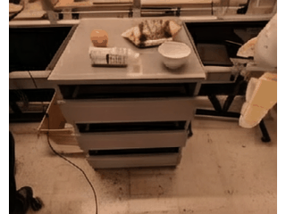
We test whether videos of a missing robot skill can be converted into action-conditioned world-model training data. An inverse dynamics model predicts robot actions from video, the resulting trajectories are added to the world-model dataset, and generated rollouts are evaluated with objective metrics, MOS ratings, pairwise human preferences, and qualitative examples.
Problem and idea
Action-conditioned world models need action-labeled examples of the behaviors they must simulate. For new skills, collecting synchronized robot observations and actions is expensive, while videos are easier to generate, retrieve, or record. The paper studies a controlled substitute: remove a target skill from the action-labeled Fractal data, recover actions for videos of that skill with an IDM, and train a world model on the resulting pseudo-labeled trajectories.
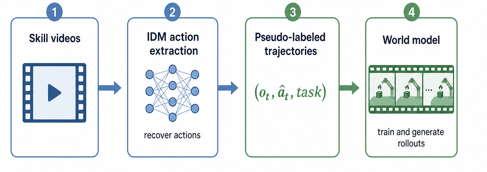
Experimental design
Main results
| Trajectory MOS | Full | No action | WM + IDM |
|---|---|---|---|
| CTRL open/close | 3.91 [3.81, 4.01] | 2.02 [1.91, 2.13] | 3.18 [2.93, 3.43] |
| Matrix open/close | 4.10 [4.01, 4.18] | 2.23 [2.09, 2.38] | 2.75 [2.44, 3.05] |
| CTRL knock | 3.96 [3.76, 4.16] | 3.23 [3.04, 3.42] | 4.15 [4.00, 4.31] |
| Matrix knock | 4.53 [4.41, 4.64] | 3.75 [3.54, 3.97] | 3.82 [3.64, 4.00] |
| Pairwise criterion | WM | WM + IDM | Prob. | 95% CI |
|---|---|---|---|---|
| Visual quality | 330 | 270 | 0.45 | [0.411, 0.490] |
| Trajectory following | 282 | 318 | 0.53 | [0.490, 0.570] |
| Physical plausibility | 282 | 318 | 0.53 | [0.490, 0.570] |
MOS confidence intervals are computed over video-level means after averaging assessor ratings for the same clip. Pairwise rows use 600 decisions per criterion.
Rollout examples
CTRL-World · Open/close

CTRL-World · Open/close
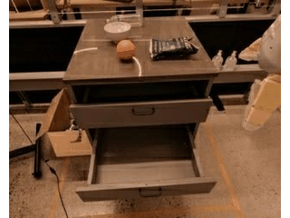
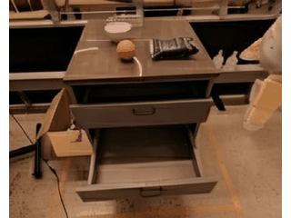
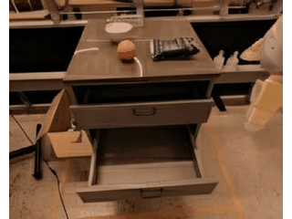
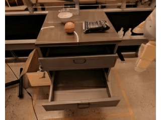
CTRL-World · Open/close

CTRL-World · Open/close
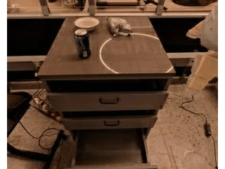
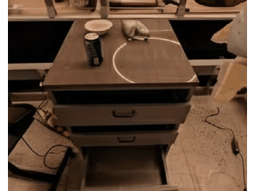
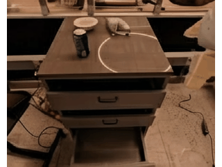
CTRL-World · Knock
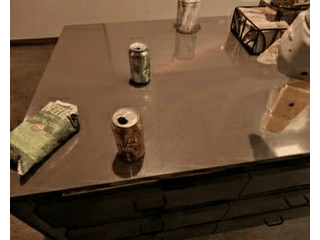
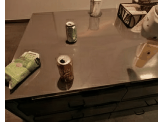
CTRL-World · Knock
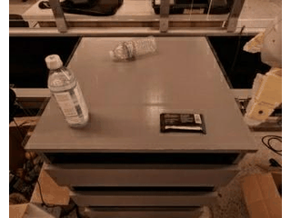
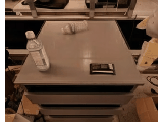
Matrix-Game 2.0 · Open/close
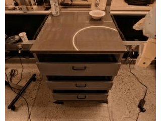
Matrix-Game 2.0 · Open/close
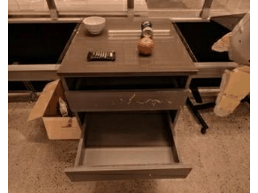
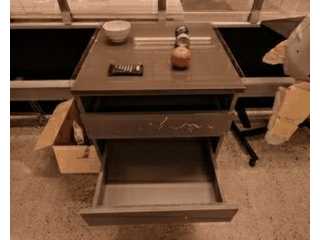
Matrix-Game 2.0 · Open/close
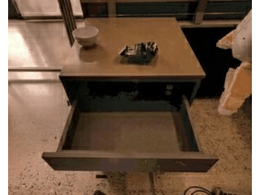
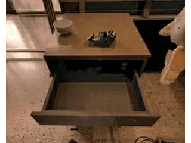
Matrix-Game 2.0 · Knock
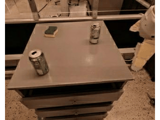
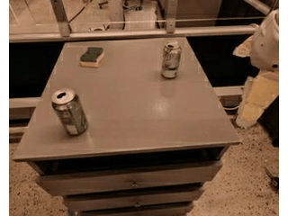